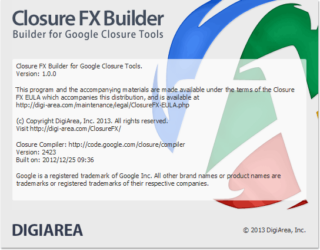

To know what version of Closure FX Builder is installed and what version of Closure Compiler is used, you can open the About box. From the menu bar, select Help > About.
The current release of the Closure FX Builder is Version 1.1.0 and it requires Java 7 or higher.